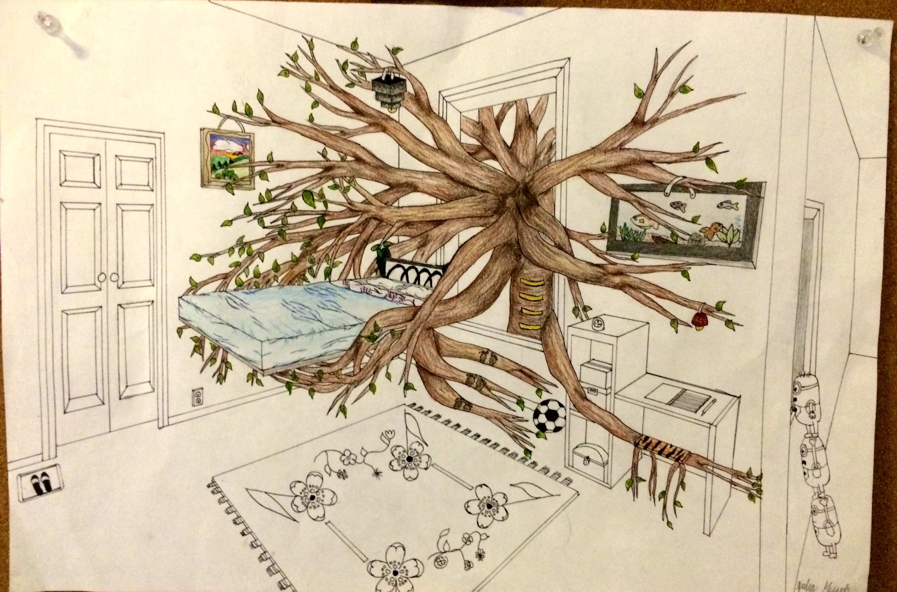
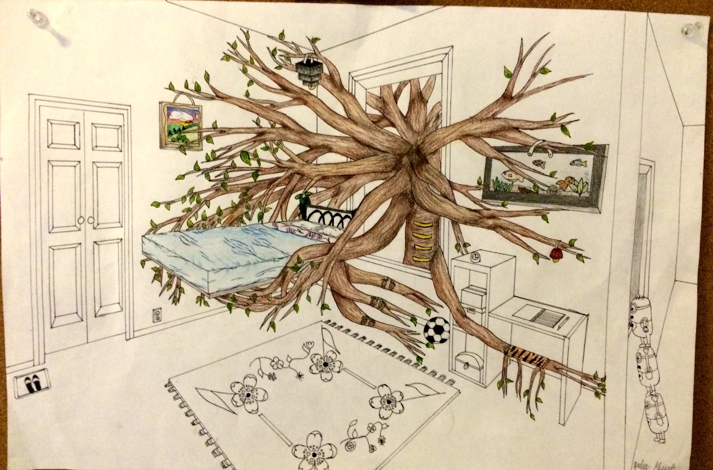
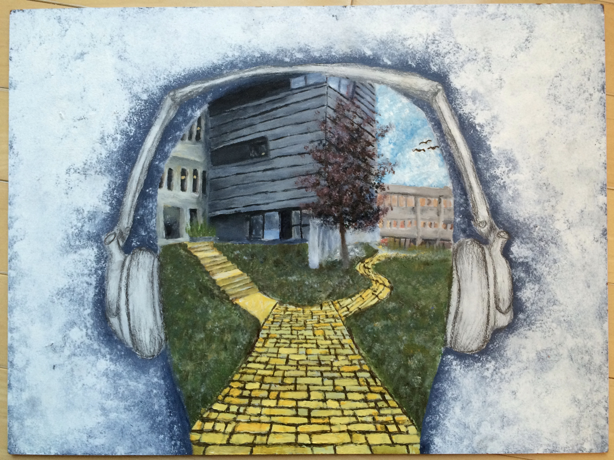
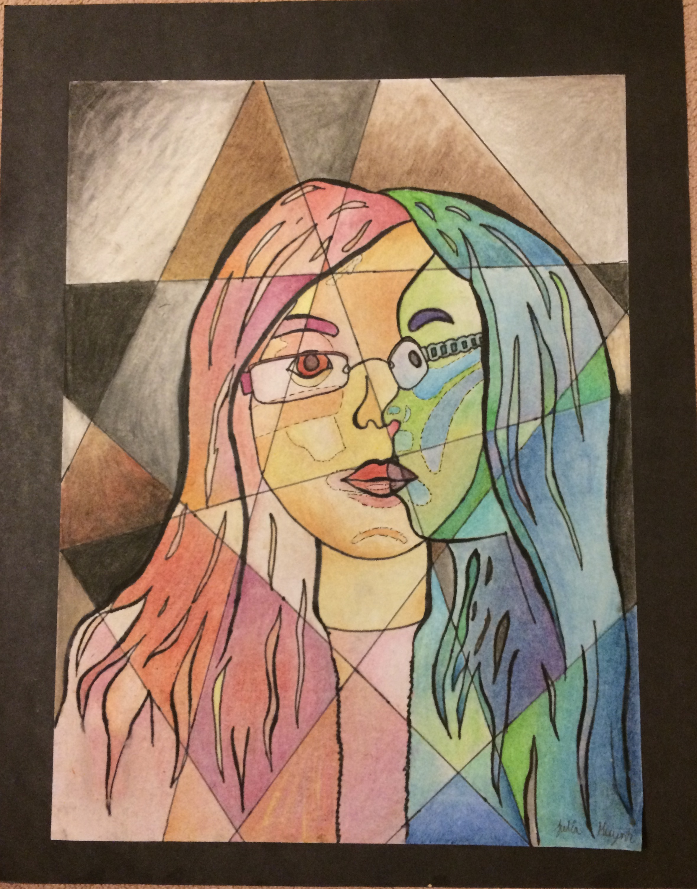
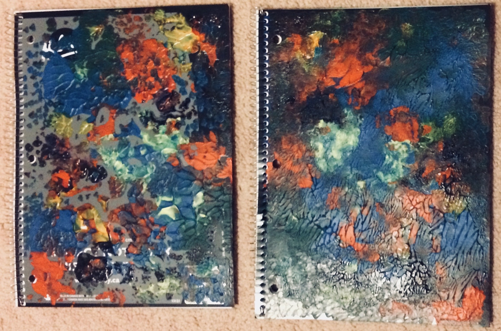
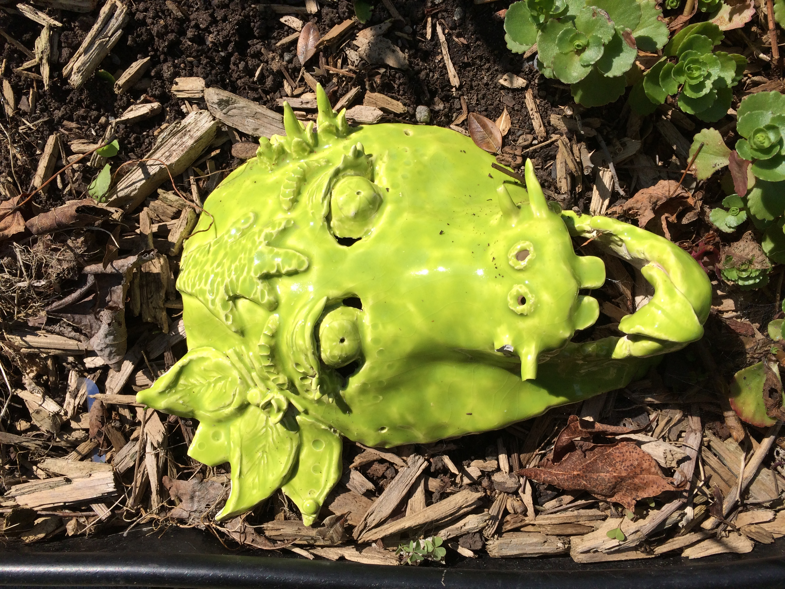
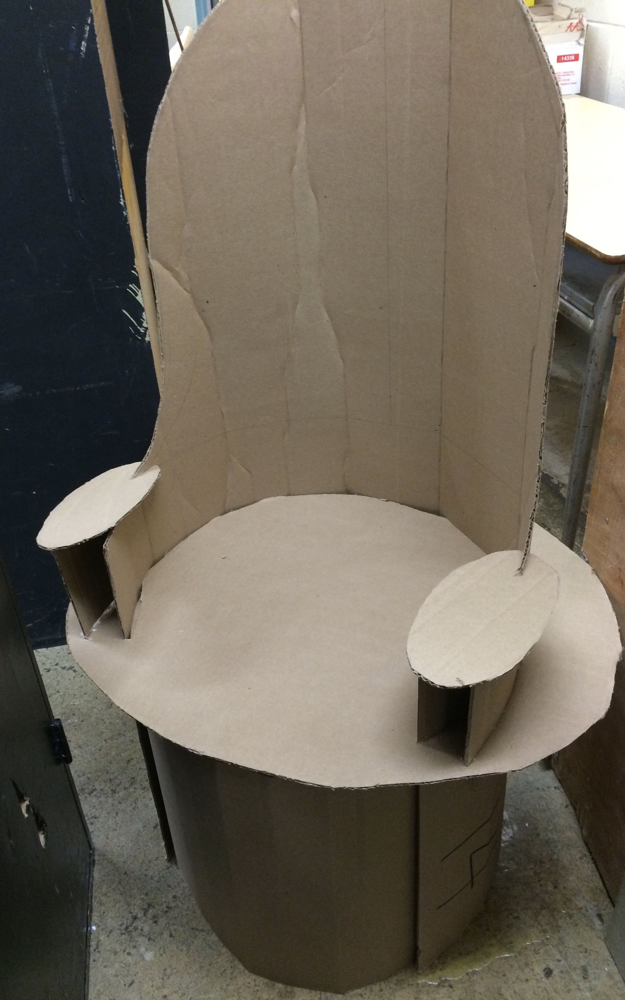
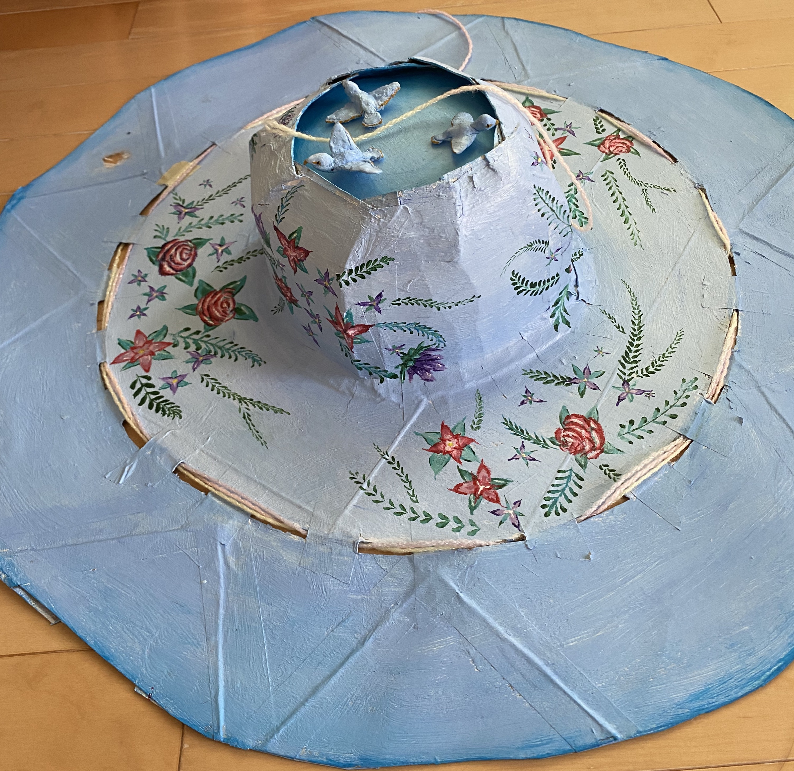
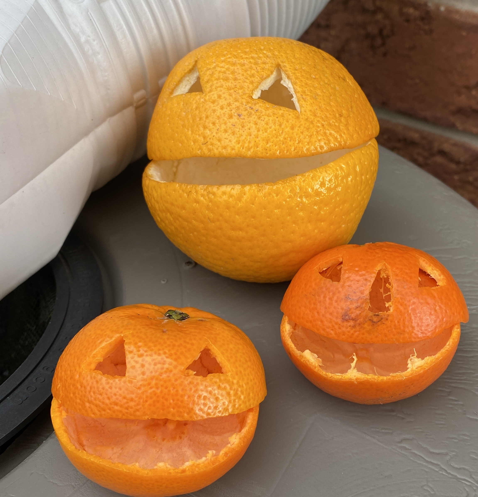

Tree House
In this illustration done in pen and pencil crayon, I aimed to communicate the message that humans rely on the environment, thus should not harm it.
In my spare time, I enjoy painting and creating things from scratch. Here are some artworks, I have created over the years:
In this illustration done in pen and pencil crayon, I aimed to communicate the message that humans rely on the environment, thus should not harm it.
The message of this painting is to choose your own path of where you want to go, don't get influenced by others. This painting was done in acrylic.
This poster done in oil pastel, experiments with colours.
These are two notebooks I decorated with acrylic paint using a sponge texture technique.
This a dragon mask made in clay.
Using cardboard, a chair was made.
This is a hat I made in cardboard, painted with acrylics. It was made during the covid lockdown as I wanted a sun hat without having to head to the store.
Instead of carving pumpkins for Halloween, oranges and tangerines are used.
